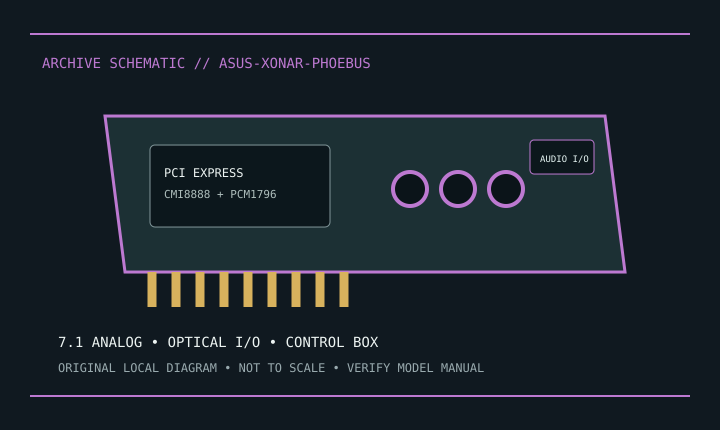

[ INDIVIDUAL MODEL // SOUND HARDWARE ]
ASUS ROG Xonar Phoebus
ROG Xonar Phoebus PCIe x1 card with 7.1-channel analog output and bundled control box; preserve the box and cable.

Model-specific specifications
| Exact model / identity | ROG Xonar Phoebus PCIe x1 card with 7.1-channel analog output and bundled control box; preserve the box and cable. |
|---|---|
| Audio processor / codec / DAC | C-Media CMI8888 HD audio processor and Texas Instruments PCM1796 DAC, as identified in ASUS model documentation. |
| Channels / resolution / sample rate | Up to 7.1 analog output; ASUS documents playback to 24-bit/192 kHz. Actual rates vary by output and driver mode. |
| Analog and digital ports | Multichannel 3.5 mm analog jacks, headphone, mic and line-in; optical S/PDIF input/output. Bundled external control box adds headphone/mic access. |
| Slot / host interface | PCI Express x1; manual specifies compatible longer PCIe slots. Requires model-specific auxiliary power. |
| Operating-system support | ASUS manual lists Windows XP, Vista and 7-era systems (32/64-bit variants). Check ASUS downloads for current driver availability. |
Compatibility & preservation
Control box, cable, auxiliary power and legacy software are model-specific; do not assume interchangeability with other Xonar products.
- Photograph the card label, board revision, bracket connections and included accessories before service.
- Retain the exact driver, firmware and operating-system version known to work with this model.
- Confirm slot fit, connector pinout, breakout hardware, channel mode and supported sample rate before integration.
Manufacturer sources
- ASUS ROG Xonar Phoebus — product supportManufacturer product, technical specification, or model manual source.
- ASUS ROG Xonar Phoebus — official user manual listingManufacturer product, technical specification, or model manual source.